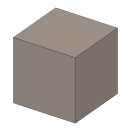

Fertile Farmland (Nitrogen, Phosphorus)・ブロック・Survival
仮（まだ本物どおりでない所がある）
本当の歴史：[0-05] 豆（紀元前9500年）

①子ども 豆を育てたり肥料をまいたりした畑。作物がよく育つ・たくさんとれる。
②学生 窒素（エンドウが熟す・硫安・硝安）：上の作物（豆以外）が速く育ち、熟すたびに1回分使う。リン（過リン酸石灰）：熟した作物を収穫すると1つ多くとれ、収穫ごとに1回分使う。どちらも3回分で、両方なくなるとふつうの耕地にもどる。
③大人 作物は、体のたんぱく質や葉緑素を作るのに窒素、花や実や根にリンがたくさん要る。麦を同じ畑で作り続けると土がやせる。豆と麦を交代で植える（輪作）と豆が残した窒素で麦がよく育つ。堆肥（コンポスターの骨粉を耕地に使う）は窒素もリンも少しずつ（1回分ずつ）、化学肥料は一度に3回分。
④ガチ 18世紀イギリスのノーフォーク農法は、小麦・カブ・大麦・クローバー（マメ科）を4年で回して収穫を大きく増やした。1913年からはハーバー・ボッシュ法 [6-09] で、空気の窒素から工場でアンモニアを作れるようになった。
（作り方のレシピは無い：拾う・掘る・ほかの方法）
（このアイテムを使うレシピは無い）